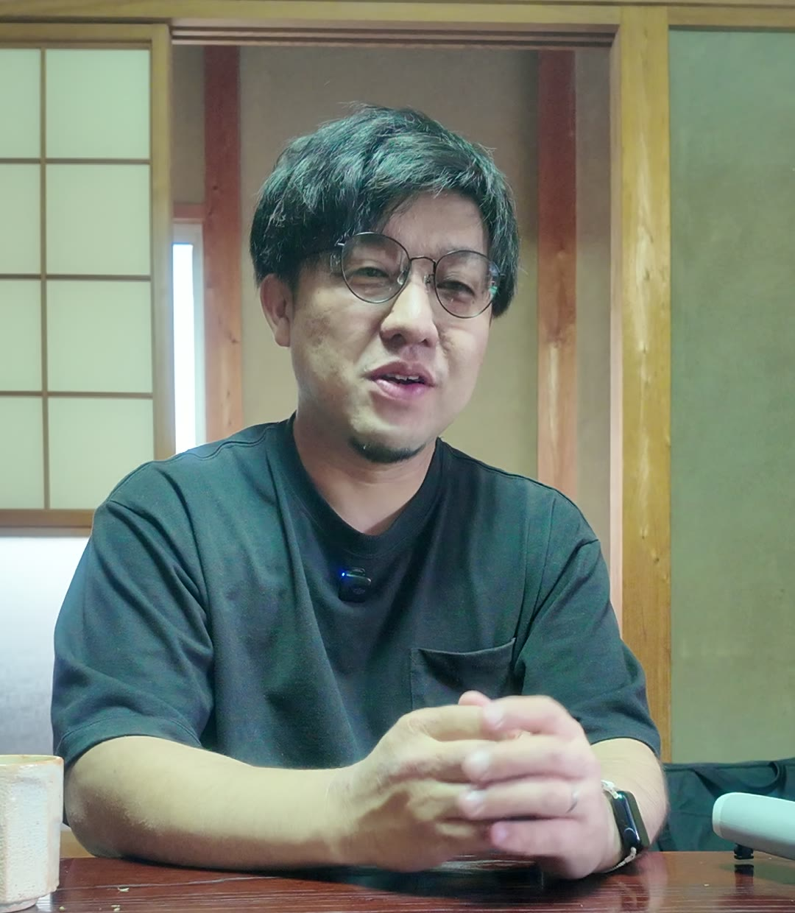
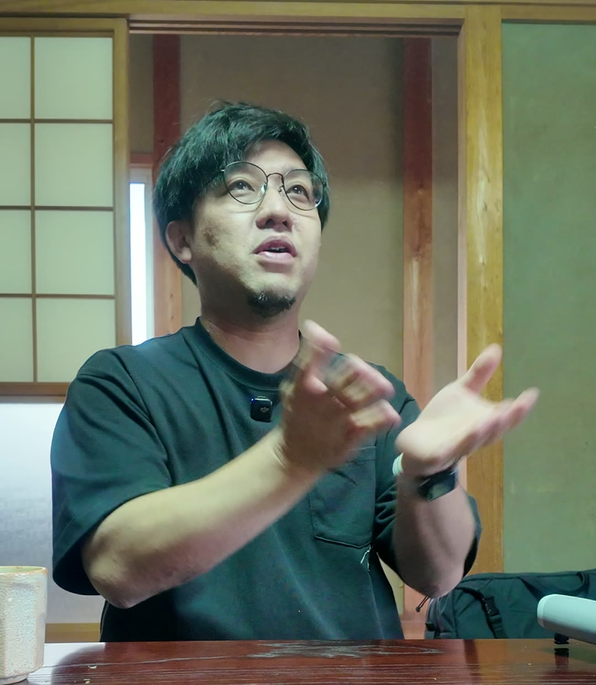

生まれた日に、
才能の種は
蒔かれている。
算命学は、生年月日からその人が持つ星を読み解く学問です。清水先生は断定せず、言葉を聞き合いながら、あなた自身に鏡を向けます。眠っている強みに、自分で気づくために。

占いが当たるかどうかは、扱う人の伝え方で変わる。だから僕は断定しない。相手の言葉と表情から読み取り、ズレを整える。それが精度を上げる、いちばんの方法です。
— 清水先生（インタビューより要約）無料 宿命診断。
あなたの星を
のぞいてみる。
生年月日を入れるだけで、算命学で「本質」をあらわす日干と、運気の“裏の時期”である天中殺がわかります。六十干支の盤の上で、あなたの生まれた日が光ります。
あなたの命式（簡易）
生まれ日の干支の上の字「」が、算命学で自分自身の本質をあらわす星です。
才能の種
水のあげ方
天中殺は「何もしないほうがいい悪い時期」と恐れられがちです。清水先生はこれを裏の自分が出る
時期と捉えます。表の自分では経験できないことをさせてもらえる。予定が狂うなら、ゆとりを持って過ごせばいい。回り道だから見える花や人がいる、という考え方です。
ここでわかるのは、命式のほんの入口です。才能の種がどこに埋まっているのか、いまの時期をどう過ごすか。清水先生の鑑定では、あなたの言葉を聞き合いながら一緒に読み解きます。
鑑定の受け方を見る寄り添うのではなく、
伴走する鑑定。
清水先生の鑑定には、三つの流儀があります。どれも、師匠から学んだことを体験し、実践を重ねる中で見つけてきたものです。
-
断定ではなく、聞き合い
「あなたはこうですよね」とは言いません。「自分はこう思うけど、どうですか」と問いかけ、反応や言葉から読み取ります。受け取る言葉とのズレを整えるから、精度が上がります。
「聞き合いっていうものをやってまして」
-
鏡を見せて、すり合わせる
寄りすぎると、同じ立場になってしまう。だから伴走に近い距離で鏡を向けます。「そうじゃない」と感じる自分も、あなた自身。そこを一緒にすり合わせます。
「あくまで僕は鏡を見せることしかしてないので」
-
悪い時期も、捉え方を変える
「悪い時期があります」で終わらせては意味がない。大切なのは捉え方と、より良くしていくこと。どうアシストするかを、いつも頭に置いています。
「要は捉え方の話であって、より良くなればいい話なので」
清水先生の言葉を、
そのまま聞く。
インタビューから、考え方が伝わる一言を抜き出しました。タップすると音声つきで再生されます。
人と関わる、
あらゆる場面に。
算命学がいちばん機能するのは「対人」の場面。相手との違いがわかると、共感はできなくても、理解はできるようになります。
- 夫婦・パートナー
- 価値観も、コミュニケーションのタイプも違って当たり前。違いを知ることで、関係が円滑になります。
- 子育て
- 学んでいる学問では、遺伝は10%と言われています。親の目線ではなく、子ども自身の宿命から関わり方を考えます。
- 仕事・営業
- 営業、コーチング、日々のコミュニケーション。相手を知るための判断基準のひとつとして使えます。
- 自分のこと
- 「見返りを求めてはいけない」と思い込んでいませんか。見返りが必要な星もあります。本当に欲しいものが見えると、世界が広がります。
- うまくいかない時期
- ここ数か月いいことがない。そんなときこそ、出来事の捉え方を変える手がかりになります。

清水先生
算命学で強みを発掘するプロデューサー
さまざまな仕事に必死で向き合っていた頃、目標設定の合宿で師匠と出会い、自分の算命学を見てもらったことがきっかけでこの道へ。「数字や結果よりも、誰のために、何のためにやるのかが原動力になる星」と言われ、目標を立て直したら驚くほどクリーンに進んだ。その体験が原点です。
師匠の教えを学び、体験し、実践を重ねてきました。「しゃべることが得意なわけではない」からこそ、教わった通りにやれば届く、再現性の高い伝え方を大切にしています。
- 学んだ道
- 師匠のもとで算命学を学び、実践
- 鑑定の型
- 本人の星は“体験型”。場数を重ねるほど磨かれる
- 家族
- 妻と、4人の子どもの父
- 受付
- 口コミ・ご紹介のみ
鑑定の内容と、
大切にしていること。
鑑定の内容
- 内容
- 算命学による個人鑑定（才能の種・時期の捉え方・人間関係）
- 形式
- 準備中
- 所要時間
- 準備中
- 料金
- 準備中
- 受付
- 口コミ・ご紹介のみ
算命学との付き合い方
- 算命学は盲信するものではありません。ひとつの判断基準としてお使いください。
- 「悪い時期」と言われて終わりにはしません。大切なのは捉え方と、より良くしていくことです。
- 鑑定直後にピンとこなくても大丈夫。種を知ると行動が変わり、後から「やっぱりそうだった」と気づく方がたくさんいます。
鑑定は、
バトンで手渡しています。
清水先生の鑑定は現在、口コミと、本当にいいと思ってくださった方からのご紹介だけで受け付けています。ひとりひとりに向き合う時間を守るためです。
- 一紹介者に伝える
清水先生を教えてくれた方に「鑑定を受けてみたい」と伝えてください。
- 二バトンが先生へ
紹介者から清水先生にお繋ぎします。
- 三日程を決めて鑑定へ
清水先生から直接ご連絡し、日程を調整します。